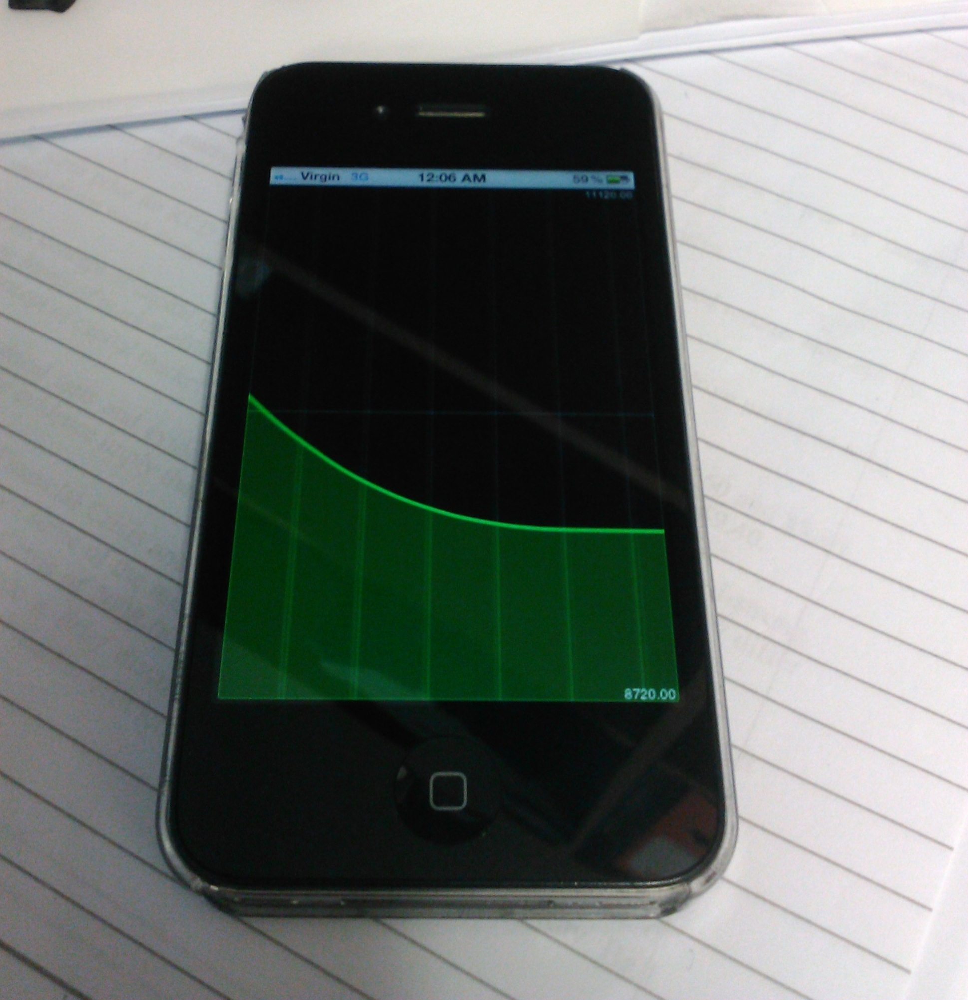

Hey Guys, I just spent a bit of time putting together a new widget using the Smoothie charts api (http://smoothiecharts.org/).
It seems to work really well, you can see some pictures below:
It also works really well on iPhone and other mobile browsers..

Just a note to view it on the iPhone full screen you must first visit the page in safari, then add the page to your home screen, then the next time you open it (from the home screen) it will be shown in full screen mode.
To install it add the smoothie.php file to your emoncms3/Vis/ Folder then you can either view it directly with:
http://YOURSERVER/emoncms3/Vis/smoothie?feedid=1&feedid2=2&apikey=APIKEY...
Where feedid and feedid2 are the ID for the two feeds you want to graph (the second one being optional) and ufac being the "update factor" or basically the delay for the graph so it seems like its showing in real time (it builds up in this example 20 seconds of data then starts showing it to you).
I also put another little html page together so i can browse to it easily showing the page in an iframe, its in the attachments as s.php you can also put this in the /Vis/ directory or anywhere else just make sure you set the src correctly for the iframe, or put it in your dashboard with:
Re: New Visualisation Widget - Smoothie realtime
Wow, very nice! will try it out thanks a lot!
Re: New Visualisation Widget - Smoothie realtime
Looks nice, will have a go on it.
Thx for the work.
__________________________
cant get it to work.
I put in my APIkey (read) and my feedid
Get at fine scrolling black box, but no data.
Re: New Visualisation Widget - Smoothie realtime
Ah i see whats wrong, if you want to put it in a smoothie folder within the Vis folder (so: /Vis/smoothie/ which is probably a better idea) then use this new version of the smoothie.php
(I changed line 13 to be 'Vis/smoothie', '', $_SERVER['SCRIPT_NAME']))."/";).
Re: New Visualisation Widget - Smoothie realtime
I dont think its the path thats the problem, because i get a black scrolling layout. Just missing the data from the feed.
Even when i change the php to point direct to my paht, there is still no feeds.
Re: New Visualisation Widget - Smoothie realtime
Basically what you want your $path variable to be set to for your project is http://juelsminde.org/sol/
This line should have got that for you:
$path = dirname("http://".$_SERVER['HTTP_HOST'].str_replace('Vis/smoothie', '', $_SERVER['SCRIPT_NAME']))."/";
Re: New Visualisation Widget - Smoothie realtime
hehe, just found out that i had to wait for the graph to show, 20 sec is a long time. and when ever i press F5 gess i have to wait again.
Sorry...
Re: New Visualisation Widget - Smoothie realtime
Nice addition Shervin thanks. Looks great, very clean.
I also agree 20 seconds is a very long time even when expecting it.
Cheers
Re: New Visualisation Widget - Smoothie realtime
Hello Shervin, I've added it to the emoncms github repo exactly as you detail above. its really great, thanks a lot!
Re: New Visualisation Widget - Smoothie realtime
Hello, I'm trying to use this Visualization Widget but keep getting the same problem as mentioned above ie: only the scrolling background with no graphic display.
$path is working well as i made a check to display it on the same page and it was correct.
An I waited well over 20 seconds to see if i get a display refresh but that too does not help I tried setting a couple of values for ufac like 100, 1000, 10000, 20000 but still no graph just the same black background with scrolling grey lines.
Any help will be appreciated.
regards,
aniston
Re: New Visualisation Widget - Smoothie realtime
I'm having the same problem here.
No data display on the graph.
But the plugin (smoothie.js) is working fine with the example from the site (http://smoothiecharts.org/).
Re: New Visualisation Widget - Smoothie realtime
Just an update,
using FireFox and (F12) Firebug console, I noticed that there is no data in the array (attached screenshot)
HTH to find out where we are going wrong.
thankx.
Re: New Visualisation Widget - Smoothie realtime
Just found the problem.
The function "vis_feed_data" is using the address wrong in the array.
function vis_feed_data(apikey,feedid,start,end,line,oldref)
{
$.ajax({
url: path+'feed/data.json',
data: "&apikey="+apikey+"&id="+feedid+"&start="+start+"&end="+end+"&dp=0",
dataType: 'json',
success: function(data)
{
var prev;
if (oldref == 0)
prev = old;
else
prev = old1;
if (data[0] != undefined && data[0][1] != prev)
{
line.append(new Date().getTime(), data[0][1]);
if (oldref == 0)
old = data[0][1];
else
old1 = data[0][1];
}
}
});
}
This should solve the problem, because the return of the value in the json part of the function is [[time, value]]. So the address should be 0 for the first and 1 for the second.